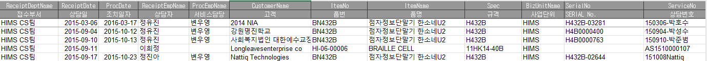
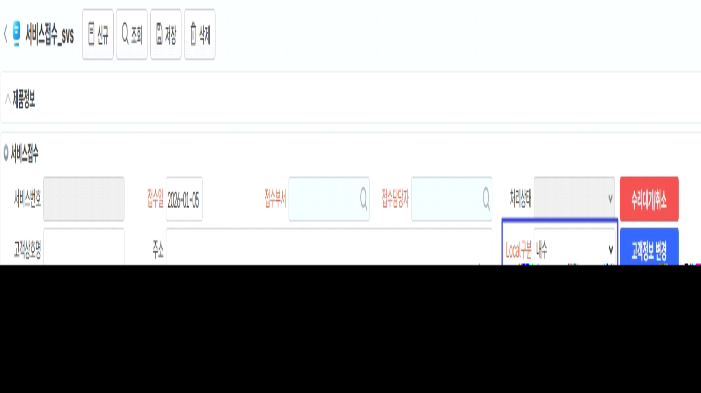

26.01.05 (수정) (화면) 서비스접수
- 서비스이력(2026년이전) 탭에 조회해주세요.
- 고객 작성 엑셀 파일 DB업로드 결과를 조회합니다. 외부 일정으로 DB접속이 어렵습니다. 업로드용 파일 첨부하니 업로드 부탁드립니다.
- 조회조건은 텍스트 형태로 Serial No, 고객, 품번, 품명, 규격.

- 서비스처리 화면으로 점프 추가 요청합니다.
- 서비스처리 화면의 Local구분을 접수 상단에 추가해주세요.

출처: \<https://call.sysware.co.kr/Page/Open/99859/100101/0/18820244>